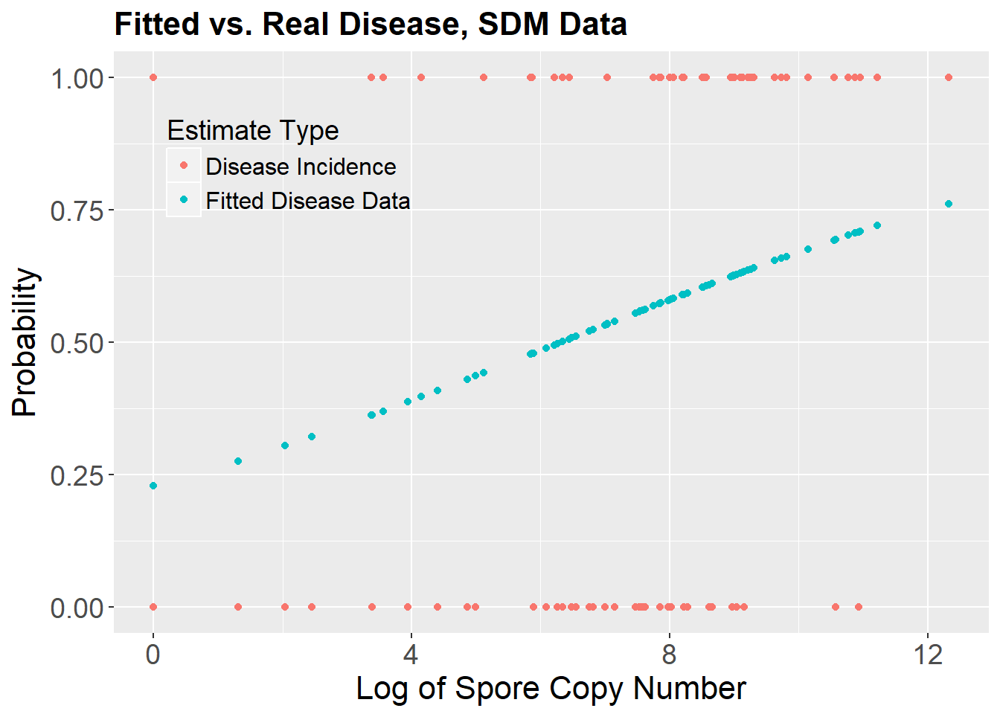
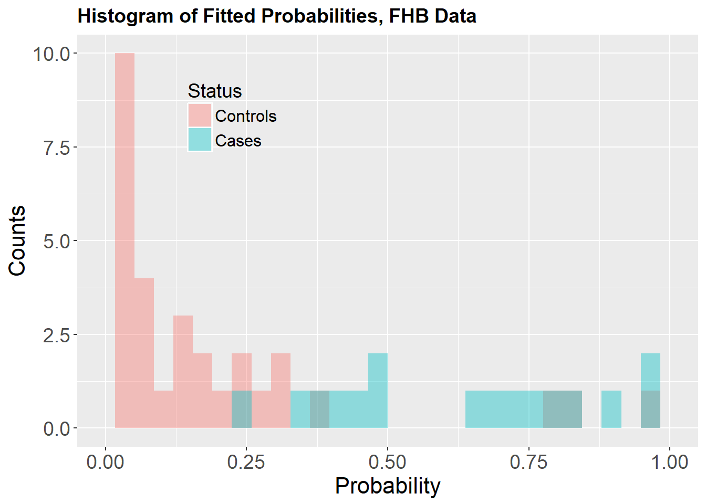
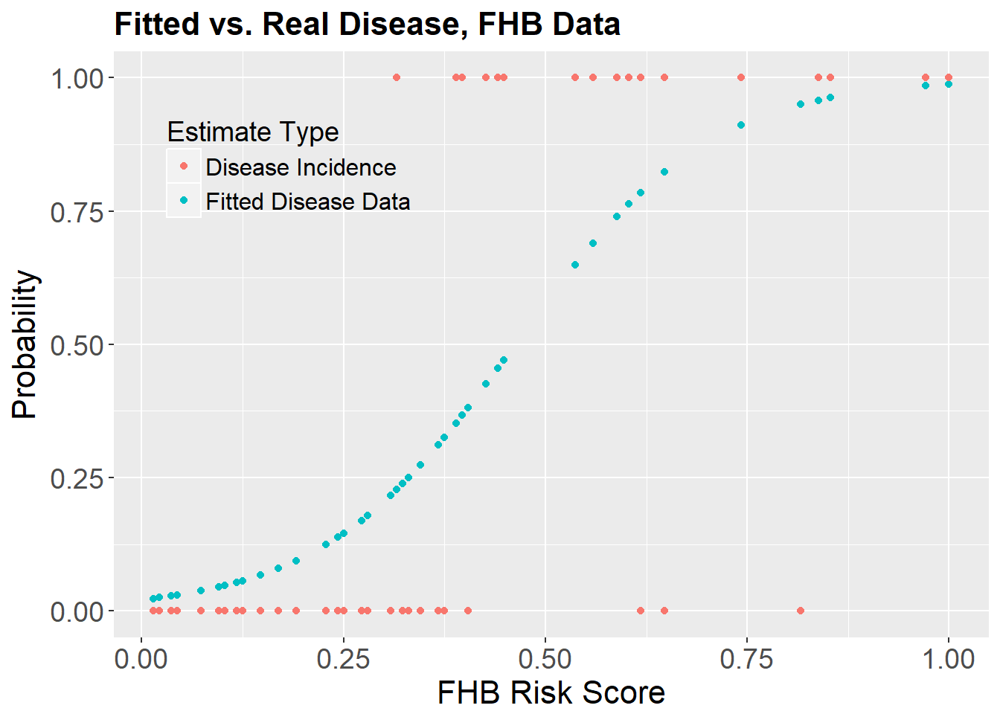

Spinach Downy Mildew Case Study and Summary Statistic Comparisons
Gareth Hughes, Robin Choudhury, Neil McRoberts
July 29, 2018
knitr::opts_chunk$set(echo = TRUE) #change this to FALSE to suppress printing the code
library(tidyverse)## Warning: package 'tidyverse' was built under R version 3.4.3## -- Attaching packages ------------------------------------ tidyverse 1.2.1 --## v ggplot2 2.2.1 v purrr 0.2.4
## v tibble 1.4.2 v dplyr 0.7.4
## v tidyr 0.8.0 v stringr 1.3.0
## v readr 1.1.1 v forcats 0.3.0## Warning: package 'tibble' was built under R version 3.4.4## Warning: package 'tidyr' was built under R version 3.4.4## Warning: package 'purrr' was built under R version 3.4.2## Warning: package 'dplyr' was built under R version 3.4.2## Warning: package 'stringr' was built under R version 3.4.4## Warning: package 'forcats' was built under R version 3.4.4## -- Conflicts --------------------------------------- tidyverse_conflicts() --
## x dplyr::filter() masks stats::filter()
## x dplyr::lag() masks stats::lag()library(broom)## Warning: package 'broom' was built under R version 3.4.3library(DescTools)## Warning: package 'DescTools' was built under R version 3.4.4Calculation of pseudo Rsq statistics from logistic regression. Analyses associated with ICPP2018 workhshop on Information Theory and a Letter to the Editor of Phytopathology. Analyses here based on data and original work from two sources:
1.Choudhury et al. (2016). Logistic regression for disease incidence increase subsequent to catches of Peronospora effusa DNA detected on rotating arm spore traps. 2. De Wolf et al. (2003), also used in Madden (2006) and McRoberts et al, (2011). Early data set used in constructing predictors of fusarium head blight (FHB) in wheat.
For the two datasets the same set of analyses will be carried out. First, a logistic regression will be performed with a binary disease state as the dependent variable and a single continuous variable as the predictor. In the first example, the predictor is the natural logarithm of the estimated pathogen DNA copy number measured on spore traps prior to observations of disease state. In the second and third examples the explanatory variable is a composite “risk” indicator constructed from a number of weather variables which individually correlate with disease incidence. In the third example, the dependent binary disease variable was constructed by collapsing the original 5-point (0 to 4) ordinal disease intensity variable to two categories by combining the original 0 and 1 classes into a “low” disease class (designated 0) and the remaning classes, 2,3 and 4, into a “high” disease class (designated 1).
The logistic regression models were fitted using the glm function in the R base installation with a binomial model and logistic link function. The model object from each analysis was passed to the PseudoR2 function from the DescTools package, with McFadden, Naglekerke, and Tjur specified as the desired values to calculate.
Diagnostic plots for each analysis were produced showing (1) the binary disase state and fitted probability values together against the explanatory variable, and (2) a histogram of the fitted probability values classified by the binary disease state and binned according to system defaults.
The analyses were run on R 3.3.3 for Windows under R Studio running on a Windows virtual machine on a remote application server accessed via Parallels Client for Chrome OS [ref for Parallels].
# install.packages("DescTools") Remove hashtag to run if needed, only need to run this once
# library("DescTools") #nice, wish I had seen this sooner rac
# Analysis 1 SDM data from Choudhury et al 2016.
# Get the data and take a look at the top of the data file
data<-read_csv("data/roc.test.csv") #read.csv was throwing out some weird errors for me, so im using read_csv from the readr package contained within tidyverse## Parsed with column specification:
## cols(
## Disease = col_integer(),
## Spore = col_double(),
## `Spore-1` = col_double(),
## `Spore-2` = col_double(),
## `Spore-3` = col_double(),
## `Spore-4` = col_double(),
## `Spore-5` = col_double(),
## `Spore-6` = col_double(),
## `Spore-7` = col_double(),
## `Spore-8` = col_double(),
## `Spore-9` = col_double()
## )attach(data)
head(data)# Fit the basic logistic regression on Disease using Spore.4
dismodel1 <- glm(Disease~`Spore-4`,family=binomial(link='logit'), data = data) #I needed to put tics (`) around Spore-4 because when i loaded it with read_csv it read it as 'Spore-4', not 'Spore.4' rac
summary(dismodel1)##
## Call:
## glm(formula = Disease ~ `Spore-4`, family = binomial(link = "logit"),
## data = data)
##
## Deviance Residuals:
## Min 1Q Median 3Q Max
## -1.5702 -1.2047 0.8288 1.0275 1.7194
##
## Coefficients:
## Estimate Std. Error z value Pr(>|z|)
## (Intercept) -1.21930 0.62024 -1.966 0.0493 *
## `Spore-4` 0.19279 0.08197 2.352 0.0187 *
## ---
## Signif. codes: 0 '***' 0.001 '**' 0.01 '*' 0.05 '.' 0.1 ' ' 1
##
## (Dispersion parameter for binomial family taken to be 1)
##
## Null deviance: 114.76 on 82 degrees of freedom
## Residual deviance: 108.55 on 81 degrees of freedom
## (4 observations deleted due to missingness)
## AIC: 112.55
##
## Number of Fisher Scoring iterations: 4tidy(dismodel1) #rac tidy() and glance() are nice functions when you want to look at cleaner outputThe Spore trap DNA count lagged by 4 observation periods (roughly 8-12 days) does have some positive association with subsequent disease state. Although the estimated effect of lagged spore trap signal is unlikely to be due to chance alone the odds of disease do not increase strongly with increase in the signal. This is the sort of situation where having a richer diagnosis of what the fitted model is doing would be useful. To that end, we ask for McFadden’s, Nagelkerke’s and Tjur’s pseudo Rsq values for the model:
# Call the pseudoR2 function and tell it to calculate McFadden,
# Nagelkerke and Tjur pR2 values; print them out.
# This seems to call DescTools although there are several functions called 'PseudoR2' rac
pseuds<-PseudoR2(dismodel1, c("McFadden","Nagel","Tjur")) #
pseuds## McFadden Nagelkerke Tjur
## 0.09783954 0.17277570 0.07346727Looking at the three values together tells us that the model explains a rather modest proportion of the observed variation (Nagelkerke), has low discrimination capacity (Tjur) and would (consequently?) have a modest impact in probability updating (McFadden). We can look at the diagnostic plots to look at data, fitted model and “Tjur” histogram of the fitted probabilities.
# Take a look at the fitted probability values from the regression.
fits1<-as.numeric(dismodel1$fitted.values) # need this because fitted.values is a list and while hist understands what
# to do with it if you don't monkey about with it, asking it to sub-divide
# the vector of values using the logical == confuses it, so we have to
# pull the numerical bit out of the list.
dis_state<-c(rep(1,46),rep(0,37))
dis_state2=dismodel1$model$Disease #this pulls it directly from the model rac
spore4_rac=dismodel1$model$`Spore-4` #this pulls it directly from the model rac
#I'm going to redo this in ggplot/tidyr feel free to ignore RAC
SDM_rac=data.frame(fits1=fits1, disease=dis_state2, spore4=spore4_rac)
SDM_rac1=SDM_rac %>%
mutate(.,status=ifelse(disease==0, "Non-cases", "Cases"))## Warning: package 'bindrcpp' was built under R version 3.4.1SDM_rac1$status <- factor(SDM_rac1$status, levels = c("Cases","Non-cases"))
ggplot(SDM_rac1, aes(fits1, fill=status))+
geom_histogram(color="black")+
scale_x_continuous(limits=c(0,1))+
facet_grid(status~., scales = "free_y")+
xlab("Fitted Probability Value")+
scale_fill_manual(values = c("grey20", "grey80"))+
theme_bw()+
theme(legend.position = "none",
legend.background = element_blank(),
strip.text = element_text(face="bold", size = 16),
axis.title = element_text(size = 16),
axis.text = element_text(size = 14),
legend.text = element_text(size = 12),
legend.title = element_text(size = 14),
plot.title = element_text(size = 16, face = "bold"))+
guides(fill=guide_legend(title = "Status"))## `stat_bin()` using `bins = 30`. Pick better value with `binwidth`.
#ggsave(filename = "figures/sdm_dot_hist_facet.png")
ggplot(SDM_rac1, aes(fits1, fill=status))+
geom_histogram(alpha=0.4, position="identity")+
scale_x_continuous(limits=c(0,1))+
#facet_grid(~status)+
xlab("Probability")+
ylab("Counts")+
ggtitle("Histogram of Fitted Probabilities, SDM Data")+
theme(legend.position = c(.15,.8),
legend.background = element_blank(),
strip.text = element_text(face="bold", size = 16),
axis.title = element_text(size = 16),
axis.text = element_text(size = 14),
legend.text = element_text(size = 12),
legend.title = element_text(size = 14),
plot.title = element_text(size = 16, face = "bold"))+
guides(fill=guide_legend(title = "Status"))## `stat_bin()` using `bins = 30`. Pick better value with `binwidth`.
# ggsave(filename = "figures/sdm_hist_identity.png") # Generate a plot of binary disease variable and fitted probabilities
# There are four NA values corresponding to zeros in the data. Dump
# the NA values and make a reduced vector for plotting the results
#Spore4<-na.omit(data$`Spore-4`) #couldnt get this to work rac
#plot(Spore4,dismodel1$fitted.values, xlab="ln(DNA copies)", ylab="Probability", col="dark blue",ylim=c(0,1))
#points(Spore.4,Disease, col="red")
SDM_rac_spore_melt=SDM_rac %>%
gather(est.type, disease, -spore4)
ggplot(SDM_rac_spore_melt, aes(spore4, disease, color=est.type))+
geom_point()+
xlab("Log of Spore Copy Number")+
ylab("Probability")+ #not sure this is the right label? rac
ggtitle("Fitted vs. Real Disease, SDM Data")+
theme(legend.position = c(.2,.8),
legend.background = element_blank(),
strip.text = element_text(face="bold", size = 16),
axis.title = element_text(size = 16),
axis.text = element_text(size = 14),
legend.text = element_text(size = 12),
legend.title = element_text(size = 14),
plot.title = element_text(size = 16, face = "bold"))+
guides(color=guide_legend(title = "Estimate Type"))+
scale_color_discrete(labels=c("Disease Incidence","Fitted Disease Data"))
#ggsave(filename = "figures/sdm_real_fit.png")Example 2: Fusarium Head Blight data
We run through the same steps with the FHB data.
# Analysis 2 The De Wolf et al fhb dataset
data2<-read.csv("data/fhb data set - Data.csv", head=TRUE)
attach(data2)
head(data2)# Fit the basic logistic regression on Disease using Spore.4
dismodel2 <- glm(disease_category~TRH90,family=binomial(link='logit'))
summary(dismodel2)##
## Call:
## glm(formula = disease_category ~ TRH90, family = binomial(link = "logit"))
##
## Deviance Residuals:
## Min 1Q Median 3Q Max
## -2.4483 -0.5728 -0.2418 0.6424 1.7198
##
## Coefficients:
## Estimate Std. Error z value Pr(>|z|)
## (Intercept) -3.855 1.062 -3.628 0.000285 ***
## TRH90 8.332 2.389 3.488 0.000487 ***
## ---
## Signif. codes: 0 '***' 0.001 '**' 0.01 '*' 0.05 '.' 0.1 ' ' 1
##
## (Dispersion parameter for binomial family taken to be 1)
##
## Null deviance: 63.510 on 47 degrees of freedom
## Residual deviance: 37.643 on 46 degrees of freedom
## AIC: 41.643
##
## Number of Fisher Scoring iterations: 5tidy(dismodel2)# Get the pseudo R2 values
pseuds2<-PseudoR2(dismodel2, c("McFadden","Nagel","Tjur"))
pseuds2## McFadden Nagelkerke Tjur
## 0.4072906 0.5678199 0.4689816The model accounts for more than half the observed variation (Nagelkerke), has much better than discrimination ability compared with the SDM example (Tjur) and has appreciable impact on the posterior probabilities given prediction (McFadden). Assuming, that the various pseudo Rsq values can be directly compared by numerical value, it appears that the FHB indicator is slightly more efficient at discrimination than on resolution. The diagnostic plots look like this:
# Print out the fitted probabilities from the model
dismodel2$fitted.values## 1 2 3 4 5 6
## 0.02797240 0.02482790 0.25016647 0.02337803 0.04486288 0.14532068
## 7 8 9 10 11 12
## 0.02337803 0.02797240 0.31175221 0.09434459 0.04754254 0.06728602
## 13 14 15 16 17 18
## 0.05661057 0.95006436 0.07974313 0.03760162 0.78432649 0.17845905
## 19 20 21 22 23 24
## 0.02482790 0.23877970 0.82300687 0.12390921 0.27383645 0.05340635
## 25 26 27 28 29 30
## 0.02967454 0.21723346 0.16971531 0.13782896 0.32513253 0.38099604
## 31 32 33 34 35 36
## 0.45544225 0.35256051 0.64972578 0.47056371 0.91153795 0.96272982
## 37 38 39 40 41 42
## 0.95807721 0.98876271 0.82300687 0.36675897 0.78432649 0.42526771
## 43 44 45 46 47 48
## 0.76288811 0.47056371 0.22790037 0.69021787 0.74002507 0.98568820fits2<-as.numeric(dismodel2$fitted.values)
#Tidy version rac
dis_state2=dismodel2$model$disease_category #this pulls it directly from the model rac
trh90_rac=dismodel2$model$TRH90 #this pulls it directly from the model rac
#I'm going to redo this in ggplot/tidyr feel free to ignore RAC
FHB_rac=data.frame(fits2=fits2, disease=dis_state2, trh90=trh90_rac)
FHB_rac1=FHB_rac %>%
mutate(.,status=ifelse(disease==0, "Controls", "Cases"))
FHB_rac1$status <- factor(FHB_rac1$status, levels = c("Controls","Cases"))
ggplot(FHB_rac1, aes(fits2, fill=status))+
geom_histogram(alpha=0.4, position="identity")+
scale_x_continuous(limits=c(0,1))+
#facet_grid(~status)+
xlab("Probability")+
ylab("Counts")+
ggtitle("Histogram of Fitted Probabilities, FHB Data")+
theme(legend.position = c(.25,.8),
legend.background = element_blank(),
strip.text = element_text(face="bold", size = 16),
axis.title = element_text(size = 16),
axis.text = element_text(size = 14),
legend.text = element_text(size = 12),
legend.title = element_text(size = 14),
plot.title = element_text(size = 14, face = "bold"))+
guides(fill=guide_legend(title = "Status"))## `stat_bin()` using `bins = 30`. Pick better value with `binwidth`.
ggsave(filename = "figures/fhb_hist_identity.png")## Saving 7 x 5 in image
## `stat_bin()` using `bins = 30`. Pick better value with `binwidth`.#tidy version rac
FHB_rac_spore_melt=FHB_rac %>%
gather(est.type, disease, -trh90)
ggplot(FHB_rac_spore_melt, aes(trh90, disease, color=est.type))+
geom_point()+
xlab("FHB Risk Score")+
ylab("Probability")+ #not sure this is the right label? rac
ggtitle("Fitted vs. Real Disease, FHB Data")+
theme(legend.position = c(.2,.8),
legend.background = element_blank(),
strip.text = element_text(face="bold", size = 16),
axis.title = element_text(size = 16),
axis.text = element_text(size = 14),
legend.text = element_text(size = 12),
legend.title = element_text(size = 14),
plot.title = element_text(size = 16, face = "bold"))+
guides(color=guide_legend(title = "Estimate Type"))+
scale_color_discrete(labels=c("Disease Incidence","Fitted Disease Data"))
ggsave(filename = "figures/fhb_real_fit.png")## Saving 7 x 5 in imageThe shape of the logistic function for the fitted probabilities is much closer to the limit (step function) for a perfect predictor, and the discrimination of the cases and controls along the explanatory variable is apparent in this plot and the binned histogram. A question occurs: Will McFadden always lag Tjur until we approach the limit of discrimination, since updating approaches certainty asymptotically?
sessionInfo()## R version 3.4.0 (2017-04-21)
## Platform: x86_64-w64-mingw32/x64 (64-bit)
## Running under: Windows 10 x64 (build 17134)
##
## Matrix products: default
##
## locale:
## [1] LC_COLLATE=English_United States.1252
## [2] LC_CTYPE=English_United States.1252
## [3] LC_MONETARY=English_United States.1252
## [4] LC_NUMERIC=C
## [5] LC_TIME=English_United States.1252
##
## attached base packages:
## [1] stats graphics grDevices utils datasets methods base
##
## other attached packages:
## [1] bindrcpp_0.2 DescTools_0.99.24 broom_0.4.3
## [4] forcats_0.3.0 stringr_1.3.0 dplyr_0.7.4
## [7] purrr_0.2.4 readr_1.1.1 tidyr_0.8.0
## [10] tibble_1.4.2 ggplot2_2.2.1 tidyverse_1.2.1
##
## loaded via a namespace (and not attached):
## [1] tidyselect_0.2.4 reshape2_1.4.3 haven_1.1.1 lattice_0.20-35
## [5] expm_0.999-2 colorspace_1.3-2 htmltools_0.3.6 yaml_2.2.0
## [9] rlang_0.2.0 pillar_1.2.1 foreign_0.8-67 glue_1.2.0
## [13] modelr_0.1.1 readxl_1.0.0 bindr_0.1.1 plyr_1.8.4
## [17] munsell_0.4.3 gtable_0.2.0 cellranger_1.1.0 rvest_0.3.2
## [21] mvtnorm_1.0-7 psych_1.8.4 evaluate_0.10.1 labeling_0.3
## [25] knitr_1.20 manipulate_1.0.1 parallel_3.4.0 Rcpp_0.12.16
## [29] scales_0.5.0 backports_1.1.2 jsonlite_1.5 mnormt_1.5-5
## [33] hms_0.4.2 digest_0.6.15 stringi_1.1.7 grid_3.4.0
## [37] rprojroot_1.3-2 cli_1.0.0 tools_3.4.0 magrittr_1.5
## [41] lazyeval_0.2.1 crayon_1.3.4 pkgconfig_2.0.1 Matrix_1.2-9
## [45] MASS_7.3-47 xml2_1.2.0 lubridate_1.7.3 assertthat_0.2.0
## [49] rmarkdown_1.9 httr_1.3.1 rstudioapi_0.7 R6_2.2.2
## [53] boot_1.3-19 nlme_3.1-131.1 compiler_3.4.0